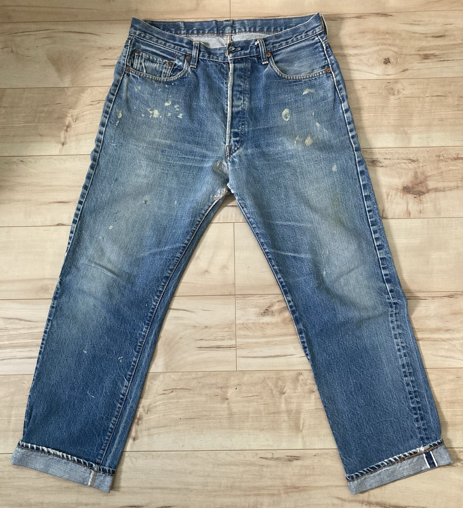
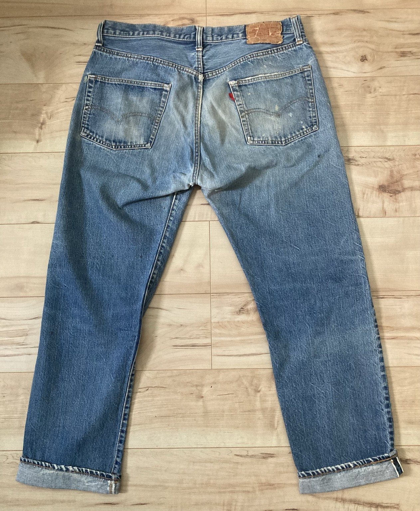

Front

DENIM FADE LAB / LEVI'S 66 EARLY
長年履き込まれたヴィンテージ501を実物写真で記録します。
淡くなったブルー、細かな縦落ち、腿・膝・バックポケット周辺の経年変化が分かりやすい個体です。501E Originalと並べることで、異なる完成個体の色落ちを比較できます。
ここでは年代を写真だけで断定せず、所有個体の実物写真と確認できる表情を中心に記録します。


写真をクリックすると拡大表示できます。